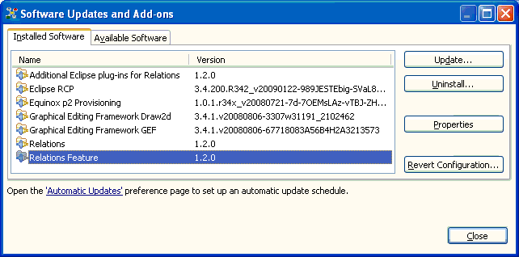

Software update
The Relations application provides facilities to update your
installed version with newer versions of the application. Click Help > Software Updates...
to access the application's update facilities (requires Internet access).
Updating software using the Available Updates wizard
The Available Updates wizard shows you what updates are available for your software.
This wizard is shown if you checked for updates in the Installed Software page.

Product configuration showing the installed components composing the application.
To update your application:
- Select the software item versions that you wish to upgrade.
In case of the Relations application this will be the entries "Relations" (the executable) and "Relations Feature" (containing the application's plug-ins).
You may check and uncheck different items in the list. Each time you do, the compatibility of the
checked updates with your current system will be recomputed.
- If the selected items have license agreements to be reviewed, you must click Next.
Carefully review the license agreements for the upgraded items. If the
terms of all these licenses are acceptable, check "I accept the terms
in the license agreements." Do not proceed to download the features if
the license terms are not acceptable.
- If the license agreements are acceptable, or if the selected items did not have
license agreements to review, click Finish. This will begin the download and
installation of the updated software.
- Some of the items may be digitally signed by the company that provides them.
This allows you to verify more easily that the features and plug-ins
that are about to be downloaded and installed are coming from a trusted supplier. You
may be prompted to verify digitally signed content once the signature is
detected.
- Once all of the software is downloaded successfully and the necessary
files installed into the product on the local computer, you will be prompted
to restart for the Workbench.
Click Yes when asked to exit and restart the Workbench for the changes to take effect.